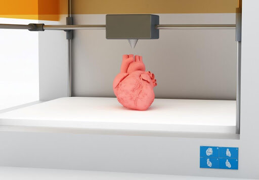
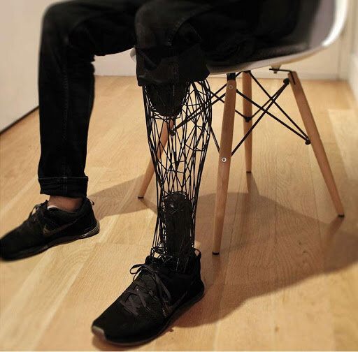
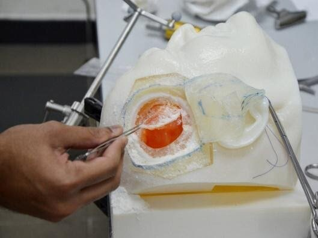

Could 3D printing be a new frontier in healthcare?

WHAT IS 3D PRINTING?
Additive manufacturing, more commonly known as 3D printing, is a process that generates a 3D physical object from a digital file. The first step in this process involves creating a digital 3D model using modelling software. The digital model acts as a “blueprint” for the desired 3D object and is sent to a printer where materials are deposited in a layer-by-layer manner until a 3D object is synthesised. Various materials such as plastics, metals and ceramics are used to create a whole host of objects including automotive parts, clothes, and even firearms, to name a few. Furthermore, biomaterials – both synthetic and natural, can be used to create objects with the ability to support biological systems. There seems to be no limit to what 3D printing can print into existence.
Within the past decade, advances in 3D printing technologies have transformed how products are designed, developed and manufactured. Large companies can create inexpensive scale models of products within a short space of time, in a process known as rapid prototyping. In 2014, engineers at Aachen University were able to produce and test an electric car in just 12 months using 3D printing techniques – something that would not be possible to achieve using current manufacturing methods.
Most notably, perhaps, are its applications within the healthcare industry. Amidst the current COVID-19 pandemic, due to an increase in demand, personal protective equipment (PPE) and ventilators have been designed and manufactured to support and protect medical staff and patients. With healthcare set to be the fastest-growing industry within 3D printing, here are some of its current and projected uses.
CURRENT AND PROSPECTIVE APPLICATIONS WITHIN HEALTHCARE
Pre-operative planning
Medical imaging technology such as Magnetic Resonance Imaging (MRI) and Computed Tomography (CT) scans are frequently used for preoperative and pre-surgical planning. However, when used alone, these techniques bear significant limitations, including difficulties visualising complex irregularities and pathologies. Implementation of 3D printing within this domain is becoming more common; now, patient scans can be used to create 3D models of specific anatomical regions and accurately plan procedures. This has several benefits: less time is spent in operating rooms, post-operative stays are shortened, as well as fewer complications arising during surgery. An example of its use for pre-operative planning is revision hip surgery. In a clinical study, it was shown to improve the accuracy of diagnoses and accurately assess the size of implantation devices required for each patient. However, some limitations of this application are that staff need extensive training and patients are required to have multiple scans, increasing their exposure to radiation.
Prosthetic medical devices

Cutting-edge printing technology is facilitating the production of custom made prosthetics and orthotics to cater to those with disabilities and help rehabilitate injured individuals. These devices are specific to the geometric anatomy of the individual, offering a comfortable fit and an improved quality of life. 3D printed prostheses can also be manufactured in a fraction of the time conventional methods require. The increasing availability of 3D printing has led to an explosion of companies that are implementing it to create devices for people living with disabilities and medical conditions.
Improving medical education
A new generation of surgeons will soon benefit from innovative medical learning tools. 3D printing technology can help model complex anatomical pathologies, eliminating the need for cadavers. Highly-detailed models of the human skull have been produced which allow simulation of the brain surgery experience. Plastics with a variety of textures are printed to mimic the different tissue layers found inside the skull. Additionally, patient-specific models can simulate different medical conditions and pathologies, for example, brain tumours.

Bioprinting
Bioprinting utilises 3D printing techniques to generate tissue that functionally and characteristically imitates the living counterpart. In bioprinting, “bioinks” are used in place of materials such as plastics and can include growth factors, cells, and carrier materials such as biopolymer gels. These substances can act as the building blocks to fabricate tissue. There are two main approaches in bioprinting: scaffold-free and scaffold-based bioprinting. In scaffold-based bioprinting, cells are printed within an exogenous biologic matrix, for example, biopolymers or hydrogels. These function as a scaffold which cells can use to support their growth, proliferation and interactions within a 3D environment. In scaffold-free bioprinting, an exogenous “scaffold” is not used to support cell growth, rather, cell pellets are self-assembled to form spheroids – non-adherent cell aggregates, that secrete an extracellular matrix. In this way, speedy fusion and maturation of building blocks are facilitated, independent of a “scaffold”.
The possibilities are endless with bioprinting; scientists successfully printed skin with working blood vessel systems in mice. Potentially, in the future it could be used to create skin grafts for burn victims and heal various skin wounds. Also, in a recent study, scientists at Massachusetts Institute of Technology developed a novel biomanufacturing technique called SWIFT. This technique utilises 3D printing technology to create organ-specific tissues. Using this method, they were able to create cardiac tissue samples with specific architecture and bio-functionality, which could have extensive therapeutic applications to assist tissue repair in damaged or impaired organs.
This technology could be highly favoured over conventional methods within tissue engineering and bioengineering. Its unique advantages include the ability for meticulous placement of biological components (i.e. cells and growth factors) that can recapitulate complex tissue biology and promote the speedy generation of tissue constructs.
Drug printing
Current drug manufacturing processes utilise generic formulations to mass-produce drugs, therefore, mainstream pharmaceutical companies are unable to create personalised medicines. Pills can be printed with the dosage of active ingredients specific to the patient’s age, pharmacogenetics, pharmacokinetics and can be made easier to ingest. This allows them to possess different bioavailabilities and, most importantly, have the potential to reduce adverse effects.
Synthetic organs
Another possible use of 3D printing is to create synthetic organs that can be implanted into those in need of transplantation. Waiting times for organ transplants are steadily increasing; in the UK, the average waiting time for a heart transplant is three years. Now more than ever we must find innovative ways to cut waiting times as this may present an opportunity to save lives. Synthetic organs could also be used to replace animal models for testing drugs.
These uses are a long way away from being feasible as the technology is not at a level to be able to print whole organs. Nevertheless, 3D printing has permitted many impressive developments within healthcare, moving us closer towards being able to print fully-functioning synthetic organs. Using human cells, researchers at Tel Aviv University were able to 3D-print a small heart containing blood vessels and other biological structures.